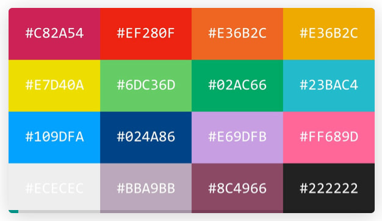

Los colores en Css
Los códigos de colores HTML son el medio para representar el formato de colores que un ordenador puede leer y mostrar.


Colores con Nombres
Los nombres de colores HTML pueden utilizarse con estilos HTML en
línea o en una hoja de estilo CSS.
Los navegadores modernos soportan 140 colores con nombre
Verde,
Rojo
Al igual que los códigos de color Hex , nombres de colores HTML pueden utilizarse con estilos HTML en línea o en una hoja de estilo CSS.
Colores con RGB
En CSS, un color se puede especificar como un valor RGB, utilizando
esta fórmula: rgb ( rojo, verde , azul )
Cada parámetro (rojo, verde y azul) define la intensidad del color
entre 0 y 255.
Por ejemplo, rgb(255, 0, 0) se muestra como
rojo, porque el rojo se establece en su valor más alto (255) y los
demás se establecen en 0.
Para mostrar negro, configure todos los parámetros de color en 0,
así: rgb (0, 0, 0). Para mostrar el blanco, configure todos los
parámetros de color en 255, así: rgb (255, 255, 255).
rgb(255, 0, 0)
rgb(0, 0, 255)
rgb(60, 179, 113)
rgb(238, 130, 238)
rgb(255, 165, 0)
rgb(106, 90, 205)
Este es un ejemplo con RGB
utilizando RGB
Colores con hexadecimal
Los códigos de color Hex (o hexadecimales) se componen de un signo # y tres pares de caracteres que representan la intensidad de los tres colores primarios (rojo, verde y azul en ese orden). Los valores pueden ir desde 00 (que es la menor intensidad para cada color primario) hasta FF (que es la intensidad más alta).
Cada código de color Hex consiste en seis caracteres en total. Estos pueden ser cualquier combinación de los diez números del 0 al 9 y de seis letras que van de la a a la f. Esto significa que existen 16.777.216 de combinaciones posibles en total. Veamos algunas de ellas.
Para crear el color blanco deberás mezclar cada uno de los colores primarios a su máxima intensidad. Esto significa que el código de color Hex para el blanco es #FFFFFF. Debido a que el negro es la ausencia de color, su código Hex es #000000. Para crear el color azul deberás definir la mayor intensidad en el azul y la menor en los otros dos colores primarios. Por el contrario, el código de color hex del rojo es #FF0000.
Colores con HSL
Los colores HSL son muy poderosos cuando los usamos de la manera correcta. Pueden ahorrarnos tiempo y esfuerzo e incluso ayudarnos a explorar opciones sobre cómo aplicar color al diseño.
¿Que es hsl?HSL significa tono, saturación y luminosidad. Se basa en la rueda de colores RGB. Cada color tiene un ángulo y un valor porcentual para los valores de saturación y luminosidad.
HSL puede ser útil cuando tenemos un diseño que usa el mismo color pero con diferentes tonalidades.
Este es un ejemplo utilizando HSL